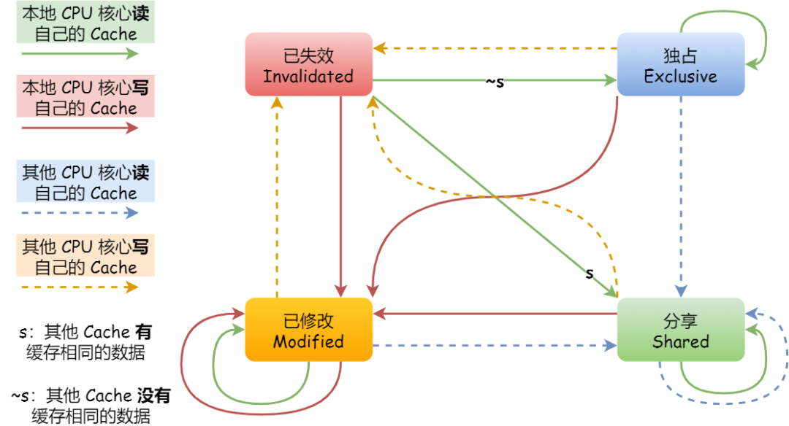

Linux:高速缓存
CPU高速缓存
本篇作为列存模型的前置内容，主要分析L1,L2,L3 Cache的基本原理
参考资料：
1. Cache
- 现代的CPU都普遍存在L1、L2、L3三层Cache用于缓解CPU和DRAM之间的较大速度差距
- 在Cortex-A53架构上，L1 Cache分为单独的instruction cache（ICache）和data cache（DCache），并且为每个CPU私有；一个cluster内的所有CPU共享一个L2 cache，不区分指令和数据；所有cluster之间共享L3 cache，通过总线和主存相连。
- 对Cache的访问只能按照某一特定的块进行，其为Cache Line，一般大小为4-128 Byts。Cache和DRAM之间的数据交换也只能遵守Cache Line的大小。
硬件访问速度
| 存储器 | 介质 | 随机访问时延 |
|---|---|---|
| L1 Cache | SRAM | 0.5ns |
| L2 Cache | SRAM | 4ns |
| L3 Cache | SRAM | 20ns |
| Memory | DRAM | 100ns |
| NVM | 1us | |
| Disk | SSD | 150us |
| Disk | HDD | 10ms |
1.1 映射模式
直接映射缓存(Direct mapped cache)
- 首先假设Cache Size为64byte，Cache Line为8byte。在这种情况下我们可以算得一共有8个Cache Line，因此需要3bit对Cache Line进行索引。因此对于一个32位内存地址
bit<31:0>，bit<2:0>称为offset用于指定Cache Line中的某个具体字节，bit<5:3>称为index用于索引某个Cache Line - 而每个Cache Line都对应着一个
tag，用于存放bit<31:6>，每当对一个地址通过index查询到Cache Line之后需要与tag进行对比以确定该Cache Line中确实存放的这个内存地址中的数据。
优缺点
- 硬件设计最为简单，成本最低
- 很显然一个内存地址只会被映射到一个固定的Cache Line位置上，如果反复访问的两个列存地址其index指向同一个Cache Line，那么会造成对这一个缓存位置的争抢，从而造成对缓存的反复排出和读入，即使缓存还有大量的空间。这种现象叫做缓存颠簸（cache thrashing）
两路组相连缓存(Two-way set associative cache)
- 为了缓解缓存颠簸的问题，我们可以将缓存进行分组（分成多路），我们依然通过index查询到Cache Line，但是我们此时有多路可以选择，因此需要同时比较多路所对应的多个
tag，找到真正对应的那个Cache Line - 从某种程度上来说，直接映射缓存是组相连缓存的一种特殊情况，每个组只有一个cache line而已。因此，直接映射缓存也可以称作单路组相连缓存
全相连缓存(Full associative cache)
1.2 更新策略
写直通(write through)
- 当CPU执行store指令并在cache命中时，我们更新cache中的数据并且更新主存中的数据。cache和主存的数据始终保持一致。
写回(write back)
- 当CPU执行store指令并在cache命中时，我们只更新cache中的数据。并且每个cache line中会有一个bit位记录数据是否被修改过，称之为dirty bit，我们将dirty bit置位。
- 主存中的数据只会在cache line被替换或者显示的clean操作时更新。因此，主存中的数据可能是未修改的数据，而修改的数据躺在cache中。cache和主存的数据可能不一致。
1.3 组织方式
- 以上在讲通过内存地址查询缓存时，绕开了虚拟地址(virtual address，VA)和物理地址(physical address，PA)的问题。
- CPU在发出对某个地址的数据访问，这个地址其实是虚拟地址，虚拟地址经过MMU转换成物理地址，最终从这个物理地址读取数据。
虚拟高速缓存(VIVT)
Virtually Indexed Virtually Tagged：通过虚拟地址形成tag和index- 优点是不需要每次读取或者写入操作的时候把虚拟地址经过MMU转换为物理地址，这在一定的程度上提升了访问cache的速度。
- 但是很显然同一个虚拟地址在不同的线程中可能表示了不同的物理地址，这导致操作系统面临歧义(ambiguity)和别名(alias)两个问题
歧义
- 指不同物理地址中的数据在cache中具有相同的tag和index，这个问题肯定只发生在不同的进程中
- 操作系统的解决方案是在切换进程时，选择flush所有的Cache Line，然后在清空Cache，保证切换后的进程不会错误的命中上一个进程的缓存数据（但是对于那些多核共享的Cache，这种方法似乎依然不能解决问题）
- 但是这样会导致切换后的进程刚开始执行的时候，将会由于大量的cache miss导致性能损失
别名
- 指不同的虚拟地址映射相同的物理地址，相同的物理地址会具有不同的tag和index，这种问题发生在共享数据时
- 操作系统的解决方案为对这种共享的页面采用nocache映射，直接绕过缓存访问DRAM。
- 还可以有另一种解决方案。这种方法只针对直接映射高速缓存，并且使用了写分配机制有效。在建立共享数据映射时，保证每次分配的虚拟地址都索引到相同的cacheline。
物理高速缓存(PIPT)
Physically Indexed Physically Tagged：通过物理地址形成tag和index- CPU发出的虚拟地址经过MMU转换成物理地址，物理地址发往Cache控制器查找确认是否命中Cache。但是MMU地址转换会影响到整体的性能
- 为了加快MMU翻译虚拟地址的速度，硬件上也会加入一块cache，作用是缓存虚拟地址和物理地址的映射关系，这块cache称之为TLB(Translation Lookaside Buffer)
物理标记的虚拟高速缓存(VIPT)
Virtually Indexed Physically Tagged：物理地址形成tag，虚拟地址形成index。这样做的主要好处在于查index和MMU可以并行完成，从而提升性能。- 首先
VIPT不存在歧义。前面在讲tag的时候，我们都是说对于一个内存地址除去用于定位Cache中位置的index和offset之后，剩下的地址位用于tag。但是对于VIPT我们并不遵守这一规则，而是对内存映射的页（page size 32KB --> bit<11:0>）剩下的位bit<32:12>用于tag。因为虚拟地址到物理地址的映射是按照page的单位进行的，因此必然不会出现歧义问题 - 其次
VIPT可能存在别名。Linux系统中映射最小的单位是页，一页大小是4KB。那么意味着虚拟地址和其映射的物理地址的bit<11:0>是一样的，如果index取的位刚好在这个范围内，就可以保证虚拟地址的index和offset其实和物理地址的一样。换一种说法其实保证Cache Size小于等于Page Size就可以了 - 解决方案其实也很简单，当Cache Size大于Page Size是，我们可以使用分路的方案，可以天然的降低index取的最高位，让其适配Page Size所占的位数
1.4 TLB
全称
translation lookaside buffer，用于缓存MMU进行地址转换的结果。64位系统一般都是3~5级。分别是PGD、PUD、PMD、PTE四级页表。MMU就是根据页表基地址寄存器从PGD页表一路查到PTE，最终找到物理地址(PTE页表中存储物理地址)。TLB采用了和前文讲的Cache相同的缓存构建方式，但是在也存在些许不同之处：1.假设地址映射的页大小为4KB，那么虚拟地址的
bit<11:0>和物理地址是完全相同的，因此这部分可以不用缓存；2.index的位数选择则只由需要缓存多少对地址映射决定了；3.通过index找到的不在是Cache Line，而是映射的物理地址bit<47:12>TLB本质是通过虚拟地址查找一个结果，其实属于
VIVT Cache，因此依然存在别名和歧义问题。但是因为映射的地址并不会发生修改，别名并不会影响正确性。
ASID
- 歧义问题则依然存在，解决方案是我们在
tag添加了一个用于区分进程空间的ASID (Address Space ID)。ASID和进程ID肯定是不一样的，进程ID取值范围很大。但是ASID一般是8或16 bit。所以只能区分256或65536个进程 - 所以我们不可能将进程ID和ASID一一对应，我们必须为每个进程分配一个ASID，进程ID和每个进程的ASID一般是不相等的。当ASID分配完后，flush所有TLB，重新分配ASID。
non-global
- 内核空间和用户空间是分开的，并且内核空间是所有进程共享。既然内核空间是共享的，进程A切换进程B的时候，如果进程B访问的地址位于内核空间，完全可以使用进程A缓存的TLB。但是现在由于ASID不一样，导致TLB miss。
- 针对内核空间这种全局共享的映射关系称之为global映射。针对每个进程的映射称之为non-global映射。
- 我们在最后一级页表中引入一个bit(non-global (nG) bit)代表是不是global映射。当虚拟地址映射物理地址关系缓存到TLB时，将nG bit也存储下来。当判断是否命中TLB时，当比较tag相等时，再判断是不是global映射，如果是的话，直接判断TLB hit，无需比较ASID。当不是global映射时，最后比较ASID判断是否TLB hit。
2. 一致性
- 因为缓存的使用，会在很多地方出现一致性问题，比如：
- DMA可以帮我们在I/O和主存之间搬运数据，且不需要CPU参与。高速缓存是CPU和主存之间的数据交互的桥梁。而DMA如果和cache之间没有任何关系的话，可能会出现数据不一致。
- iCache和dCache一致性问题。对于某些self-modifying code，在执行的时候会修改自己的指令。修改指令时将需要修改的指令数据加载到dCache中，修改成新指令并写回dCache。如果旧指令已经缓存在iCache中。那么对于程序执行来说依然会命中iCache。
- 这些一致性问题都会通过一些简单的硬件或者软件方案保证一致性，并不是我们的重点。我们核心还是关注多核下的缓存一致性。
2.1 多核缓存一致性
- 其实问题非常简单，及每个CPU内都用单独的缓存，当两个线程需要访问同一块内存地址时，如果不对两个CPU的缓存做同步操作，就会造成多个副本的问题
- 多核的一致性问题其实是可以通过软件来解决的，但是因为软件方案的性能极差，因而现在的系统都是通过硬件来维护的
缓存同步要求
- 某个 CPU 核心里的 Cache 数据更新时，必须要传播到其他核心的 Cache，这个称为写传播（Wreite Propagation）
- 某个 CPU 核心里对数据的操作顺序，必须在其他核心看起来顺序是一样的，这个称为事务的串形化（Transaction Serialization）。这里其实涉及到TSO模型了，在x86的架构下是要求指令执行结果要能够满足全局有序的
Bus Snooping Protocol
- 总线嗅探（Bus Snooping）的工作机制是，当CPU修改自己私有的Cache时，硬件就会广播通知到总线上其他所有的CPU
- 每个CPU来说会有特殊的硬件监听广播事件，并检查是否有相同的数据被缓存在自己的CPU。如果私有Cache已经缓存这个即将修改的数据，那么该私有Cache也需要更新对应的cache line
- 这种bus snooping方法简单，但要需要每时每刻监听总线上的一切活动。不管别的CPU私有Cache是否缓存相同的数据，都需要发出一次广播事件。这在一定程度上加重了总线负载，也增加了读写延迟
MESI Protocol
需要说明，MESI协议是在总线嗅探的基础上进行构建的，它的核心思想是去标明每一个Cache Line的状态，然后只在需要通知别的核的情况下才去广播事件。在大部分只需要修改自己的私有内存的情况下就不需要通知别的核，自己对缓存的修改情况了。
全称来源于四种状态，分别是：
Modified：已修改，表示Cache Line中的数据已经被更改，但是还没有写进内存中，可以直接进行数据更改不通知其他CPUExclusive：独占，和内存中的数据是保持一致的，但仅存储于当前CPU的缓存中，可以修改数据并且切换状态，但是不需要通知其他CPUShared：共享，和内存中的数据是保持一致的，被多个CPU的缓存所持有，修改数据时需要通知其他CPU将相同位置的缓存改为失效状态Invalid：已失效，数据已经失效，不可以读取也不可以修改

伪共享
- 如果我们有两个全局变量
global_A和global_B，它们同时被存放在了一个CacheLine的范围内。但这两个变量分别只被task_A和task_B两个进程访问 - 尽管这两个变量是完全不共享的，但是它们所存放的Cache Line却需要被共享，从而造成了不必要的缓存同步，从而影响性能。这种现象被称为伪共享(false sharing)
- 解决方案也很简单，按照Cache Line进行对齐就可以了，在Linux kernel中存在
__cacheline_aligned_in_smp宏定义用于解决false sharing问题
2.2 atomic实现原理
- 问题很简单，本质就是要求对多个变量的多个操作是同时完成的。比如对一个整形执行加一操作，需要先读出数据，再进行加一，最后回写。如果不是一次性完成会存在正确性问题，因此需要原子操作保证其正确性
Bus Lock
- 当CPU发出一个原子操作时，可以先锁住Bus（总线）。这样就可以防止其他CPU的内存操作。等原子操作结束，释放Bus
- 但是锁住Bus会导致后续无关内存操作都不能继续。实际上，我们只关心我们操作的地址数据
CacheLine Lock
- 借助多核Cache一致性协议MESI实现原子操作，Cache line的状态处于Exclusive或者Modified时，可以说明该变量只有当前CPU私有Cache缓存了该数据。所以我们可以直接修改Cache line即可更新数据。并且MESI协议可以帮我们保证互斥
- 但这不能保证多步操作期间不被打断，因此我们还需要再添加一个locked标志
- 当$CPU_0$试图执行原子递增操作时。$CPU_0$发出”Read Invalidate”消息，其他CPU将原子变量所在的缓存无效，并从Cache返回数据。$CPU_0$将Cache line置成Exclusive状态。然后将该cache line标记locked。然后$CPU_0$读取原子变量，修改，最后写入cache line。完成所有操作之后将cache line置位unlocked
- 如果$CPU_1$尝试执行一个原子递增操作，$CPU_1$会发送一个”Read Invalidate”消息，$CPU_0$收到消息后，检查对应的cache line的状态是locked，暂时不回复消息（$CPU_1$会一直等待$CPU_0$回复Invalidate Acknowledge消息）。直到cache line变成unlocked
2.3 spinlock
- Linux kernel中常见的互斥原语，适用于不可睡眠上下文环境访问共享数据的互斥，是一种自旋锁
- 看上去似乎通过atomic操作可以简单的实现，但其实经历了较多的优化，而这些复杂的优化是和CPU缓存的一致性协议息息相关的
wild spinlock
1 | |
- 首先我们需要知道
test_and_set是无条件置1操作，并且返回原来的值，这个操作在MESI协议中需要发送invalid消息给其他CPU，然后再修改自己缓存中的值。 - 当多个CPU竞争时，因为两边都在反复的执行写操作，这块内存空间需要在多个缓存之间来回颠簸，导致的带宽压力和性能损失。
1 | |
- 解决方案也非常简单，我们提前读锁的状态，当处于被锁住的状态时，多个CPU缓存因为只在读该变量，因此一直保持
shared状态，避免了缓存颠簸 - 但这种方式其实依然存在饥饿的问题，可能某个CPU一直无法获得锁
ticket spinlock
1 | |
- 主要问题在于，当我们目前有多个CPU在while循环的等待中时，
lock->owner明显是处于shared状态的。而当持有锁的CPU释放锁的时候会执行lock->owner++，修改这个值会同时将多个CPU中的缓存置为Invalid；之后这多个CPU又会请求释放锁的CPU获取修改后的缓存 - 随着CPU数量的增多，总线带宽压力很大。而且延迟也会随着增长，性能也会逐渐下降。而且$CPU_0$释放锁后，$CPU_1 - CPU_7$也只有一个CPU可以获得锁，理论上没有必要影响其他CPU的缓存，只需要影响接下来应该获取锁的CPU（按照FIFO的顺序）。这说明ticket spinlock不具备可扩展性
qspinlock
- 前面的两种spinlock的根本原因就是每个CPU都spin在共享变量上。所以我们只需要保证每个CPU spin的变量是不同的就可以避免这种情况了。这其实就是MCS锁的实现原理。qspinlock的实现是建立在MCS锁的理论基础上
1 | |
- 加锁操作只需要将所属自己CPU的mcs_spinlock结构体加入单链表尾部，然后spin，直到自己的mcs_spinlock的locked成员置1（locked初始值是0）
- 解锁操作只需要将解锁的CPU对应的mcs_spinlock结构体的next域的lock成员置1，相当于通知下一个CPU退出循环
Linux:高速缓存
https://github.com/2024/05/12/Linux-高速缓存/